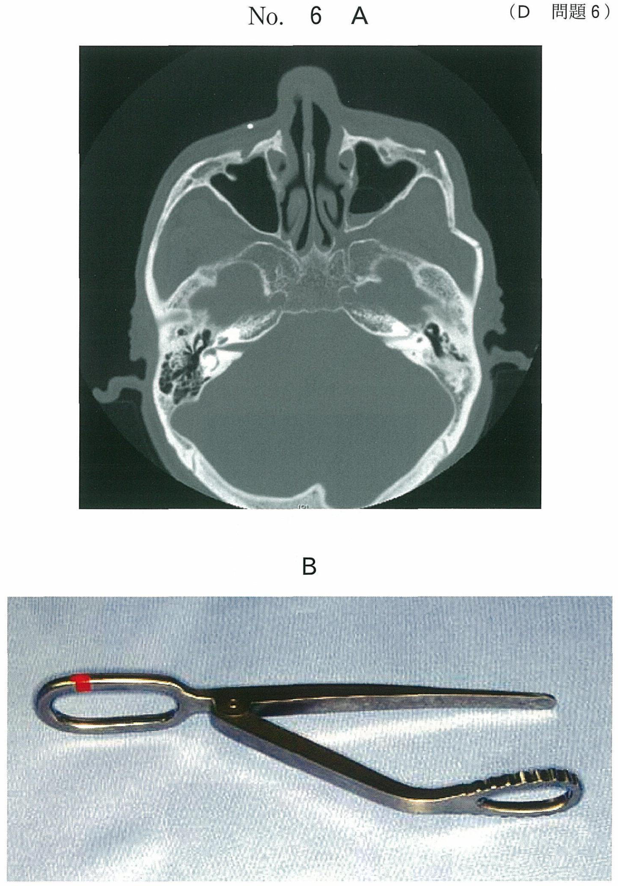
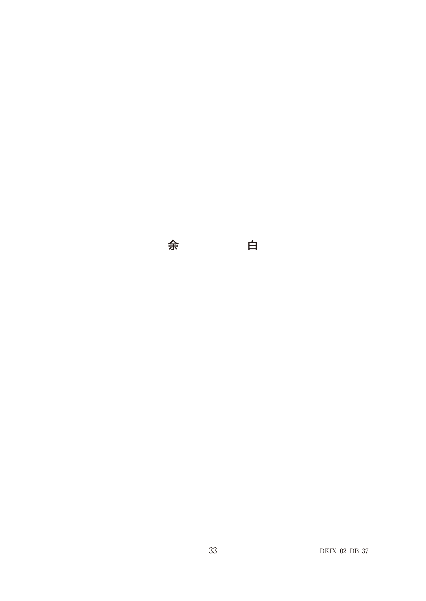

唾液腺の病変
唾液腺の解剖
大唾液腺と導管
| 唾液腺 | 導管 | 開口部 |
|---|---|---|
| 耳下腺 | ステノン管（耳下腺管） | 上顎第二大臼歯の頬粘膜 |
| 顎下腺 | ワルトン管（顎下腺管） | 舌下小丘 |
| 舌下腺 | 多数の小導管 | 舌下ひだ |
MRIでの位置確認
- 耳下腺：下顎枝の後方、外耳道の前下方
- 顎下腺：顎下三角内、下顎骨下縁の内側
- 舌下腺：口腔底、顎舌骨筋の上方
唾石症
特徴
- 顎下腺（ワルトン管）に最も多い（約80%）
- ワルトン管は長く、上方に走行するため唾石ができやすい
- 食事時の顎下部腫脹・疼痛が特徴的
画像所見
| 検査 | 所見 |
|---|---|
| X線（咬合法など） | 不透過像として描出 |
| CT | 高吸収の石灰化像、顎下腺の変性（慢性炎症） |
| 唾液腺造影 | 導管の拡張、造影剤の停滞 |
唾石による顎下腺変性
- 慢性的な唾液うっ滞により腺組織が変性
- CTで顎下腺のびまん性濃度上昇
- MRI T2強調像で高信号を呈する軟組織腫脹
唾液腺腫瘍
好発部位
- 唾液腺腫瘍の約80%は耳下腺に発生
- 耳下腺腫瘍の約80%は良性
- 良性腫瘍で最多は多形腺腫
画像検査
| 検査 | 特徴・適応 |
|---|---|
| MRI | 腫瘍の位置、範囲、性状評価に優れる T1：低〜中信号、T2：高信号（多形腺腫） |
| CT | 骨浸潤の評価 |
| 超音波 | スクリーニング、穿刺吸引細胞診のガイド |
多形腺腫のMRI所見
- T1強調像：低〜中信号
- T2強調像：著明な高信号（粘液成分による）
- 境界明瞭な腫瘤
その他の唾液腺疾患
シェーグレン症候群
- 自己免疫疾患による唾液腺・涙腺の障害
- 唾液腺シンチグラフィ：集積低下、排泄低下
- 唾液腺造影：apple tree appearance（点状拡張像）
ワルチン腫瘍
- 耳下腺に好発する良性腫瘍
- 唾液腺シンチグラフィ：99mTcO4が高集積（例外的）
- 通常の腫瘍は集積欠損だが、ワルチン腫瘍は集積亢進
唾液腺の画像検査法
| 検査法 | 目的・特徴 |
|---|---|
| 唾液腺造影 | ヨード造影剤を導管から注入 導管系の形態評価（拡張、狭窄、唾石） |
| 唾液腺シンチグラフィ | 99mTcO4を使用 唾液腺の機能評価（集積・排泄） |
| MRI | 軟組織の描出に優れる 腫瘍の位置・性状評価 |
| CT | 唾石の検出、骨浸潤の評価 |
過去問で確認
103D7【顎下腺唾石】
60歳の女性。右側顎下部の違和感を主訴として来院した。初診時のエックス線写真（別冊No.7A）とそのトレース図（別冊No.7B）とを別に示す。
点線で示される陰影の原因と考えられるのはどれか。1つ選べ。


a 舌骨
b 左側下顎隆起
c 右側顎下腺唾石
d 下顎左側大臼歯の修復物
e 下顎右側大臼歯部の骨硬化
b 左側下顎隆起
c 右側顎下腺唾石
d 下顎左側大臼歯の修復物
e 下顎右側大臼歯部の骨硬化
正解：c
【解説】右側顎下部の違和感＋X線での不透過像。位置と形態から顎下腺（ワルトン管）の唾石と診断。唾石は顎下腺に最も多い。
105D37【唾石と顎下腺変性】
34歳の女性。かかりつけ歯科医で指摘された右側下顎角前方のエックス線不透過像の精査を希望して来院した。3年前に右側顎下部の腫脹と疼痛があったが、現在、症状はないという。初診時のエックス線写真（別冊No.37A）とCT（別冊No.37B）とを別に示す。
観察できるのはどれか。2つ選べ。


a 咽頭腔の狭窄
b 顎下腺の変性
c 顎舌骨筋の腫脹
d 唾石様の石灰化物
e 下顎骨舌側骨皮質の消失
b 顎下腺の変性
c 顎舌骨筋の腫脹
d 唾石様の石灰化物
e 下顎骨舌側骨皮質の消失
正解：b, d
【解説】X線で唾石様の石灰化物を認め、CTで顎下腺の変性（慢性唾液腺炎による腺組織の変化）を認める。過去の腫脹・疼痛は唾石による症状。
109B35【唾液腺腫瘍の発生部位】
39歳の女性。頸部の腫脹を主訴として来院した。左側の上頸部に無痛性の腫脹を認める。病理組織学検査では多形腺腫であった。初診時のMRI T1強調像とT2強調像（別冊No.35）を別に示す。
腫瘍の発生部位はどれか。1つ選べ。


a 頰腺
b 舌下腺
c 顎下腺
d 耳下腺
e 甲状腺
b 舌下腺
c 顎下腺
d 耳下腺
e 甲状腺
正解：d
【解説】左側上頸部（下顎枝後方）の腫瘤で、多形腺腫と診断。MRIで腫瘍の位置が耳下腺領域にあることを確認。多形腺腫は耳下腺に好発する。